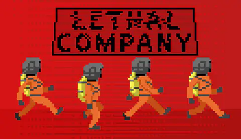
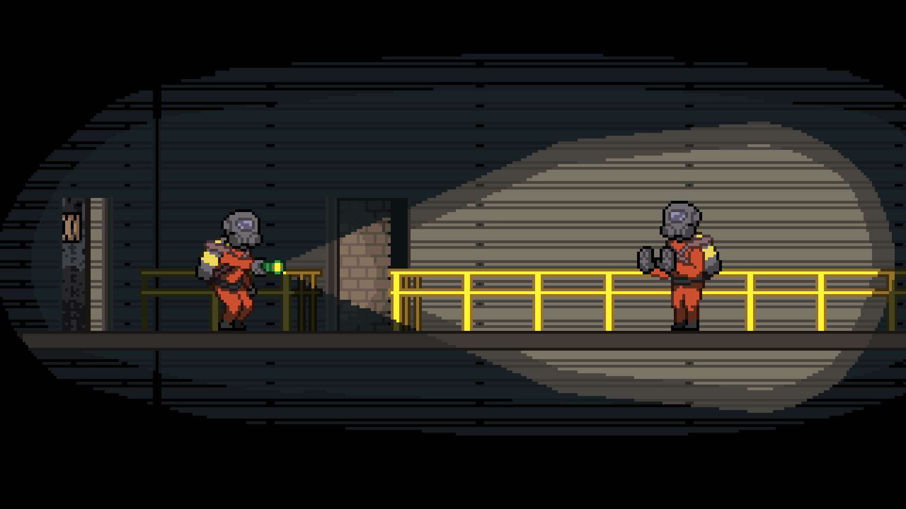

O jogo Lethal Company é um jogo cooperativo ou solo de terro, onde os jogadores assumem o papel de trabalhadores em uma empresa de coleta de recursos.
O objetivo do jogo é coletar recursos valiosos enquanto enfrenta desafios e perigos que acontecem nas explorações. Os jogadores devem trabalhar juntos para baterem a meta e não serem despedidos.
Dicas

1. Use o ambiente ao seu favor para se esconder ou dispistar de inimigos.
2. Comunique-se com seus colegas de equipe para coordenar ações e evitar situações perigosas.
3. Gerencie seus recursos com cuidado e priorize a segurança sobre a ganância.
4. Esteja atento aos sons e movimentos dos inimigos para detectar ameaças.
5. fique atento no Horario
Mods

Existem diversos mods para o jogo Lethal Company, que podem adicionar novos recursos, desafios e personalizações ao jogo. Alguns mods populares incluem:
1. Mod de Novos Mapas: Adiciona novos mapas para os jogadores explorarem, com diferentes layouts e desafios.
2. Mod de Novos Inimigos: Introduz novos tipos de inimigos com comportamentos únicos, aumentando a variedade de desafios no jogo.
3. Mod de Personalização: Permite aos jogadores personalizar seus personagens com roupas e acessórios
Os melhores mods para você jogar no multiplayer são:
BrokenBags
Mod que permite coloca qualquer coisa menos os corpos na BeltBag do jogo
Scrap Magic
Adiciona um comando no chat (/sort) para organizar os itens na nave
BetterBetterTeleporter
Quando você se teletransporta, o mod permite você fica com seus itens
ShipLootCruiser
O mod te dara o valor exato se todos os itens na nave
Hitmarker
Esse mod adiciona um marcador visual no alvo quando você acerta ou causa um dano
GrabToSell
Mod que permite vender os itens sem precisar colocá-los na bancada do chefe
InfiniteReach
Mod que permite pegar os itens a uma distancia maior
LethalConfig
Mod que permite configurar os mods baixados
Glow Steps
Mod que adiciona um efeito de brilho nos passos dos jogadores, facilitando a localização dos colegas de equipe em ambientes escuros
RemoverOfFog
Mod que remove a névoa do jogo, melhorando a visibilidade e permitindo que os jogadores vejam mais claramente o ambiente ao seu redor